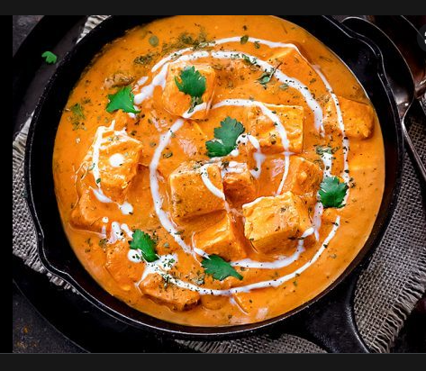

How to make Paneer Butter Masala
Ingredients:

1 & 1/2 teaspoon ginger-garlic paste
1 teaspoon coriander powde
1/2 teaspoon garam masala
1/2 teaspoon Kashmiri red chili powder
1/4 teaspoon red chili powder
1/4 teaspoon salt
juice of 1/2 lime
Instructions:
Combine the paneer with the marinade ingredients.
Marinate the paneer.
Arrange the paneer on a foil-lined baking sheet.
Bake until lightly golden at the edges. Remove and set aside.
Saute the vegetables and aromatics over medium-low heat until tender.
Curry and garam masala powder spinkled over a skillet of sautéed vegetables.
Add the tomato paste and spices to the vegetables.
Stir to combine and cook until tender.